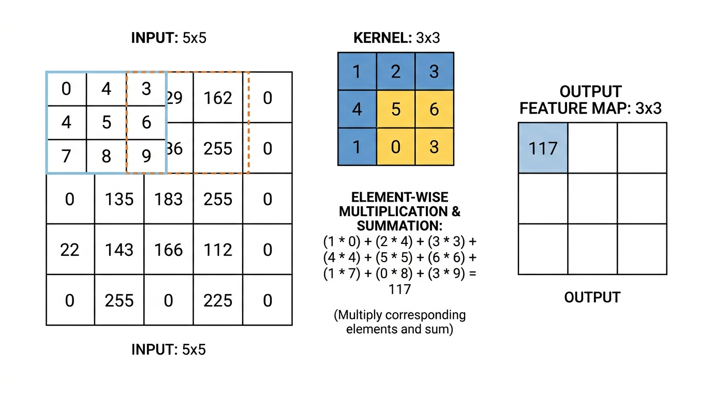
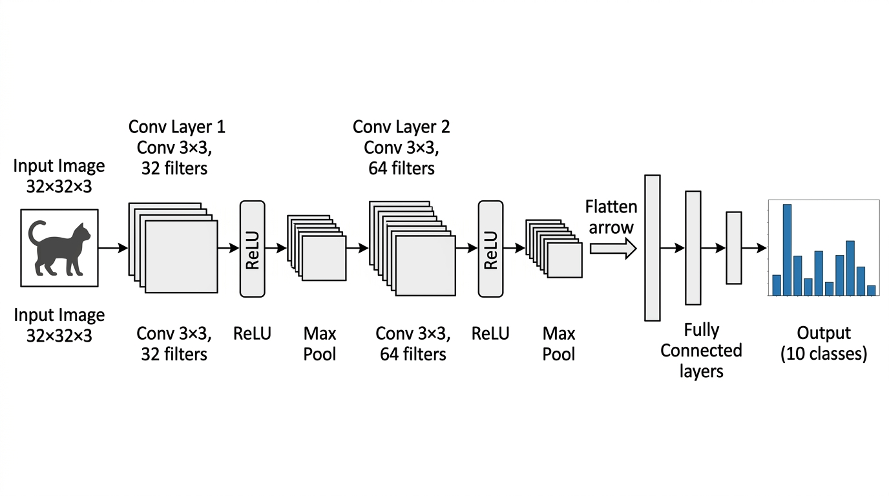
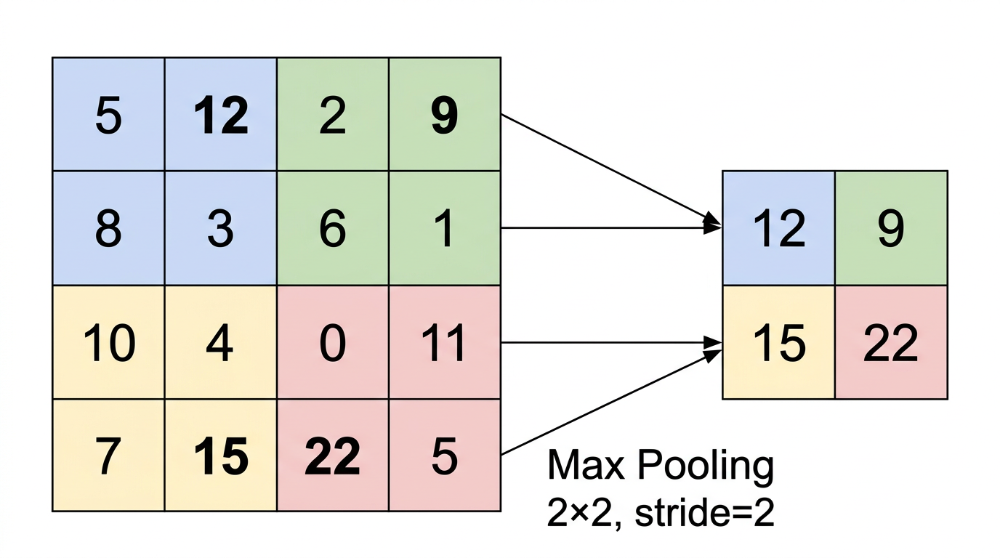
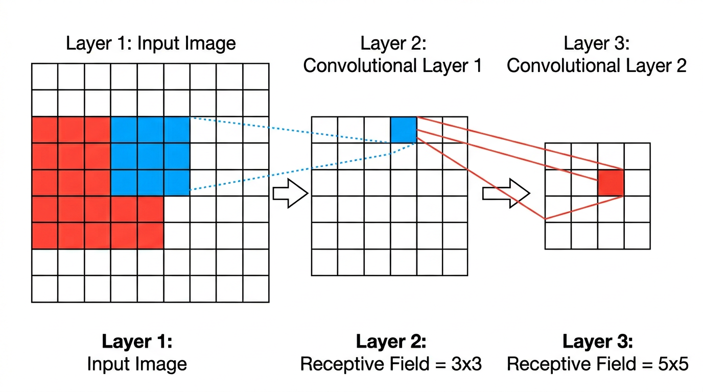

03 - CNN：利用图像的空间结构¶
主维度：D1 基础架构 关键关系： - CNN (架构) --依赖--> MLP (架构)：CNN 依赖 MLP 作为学习基础 - GCN (架构) --推广了--> CNN (架构)：GCN 推广了 CNN 的卷积从网格到图结构 - GCN (架构) --是一种--> GNN (架构)：GCN 是一种 GNN
学习路径：LLM/02 基础 → 深入 MLP（02） → 本章 → RNN/LSTM → 训练数学
前置知识：MLP 结构、反向传播、权重初始化、残差连接（02 已覆盖）；线性代数（矩阵运算）
参考： - Wikipedia - Convolutional neural network - d2l.ai Ch.7 - 卷积神经网络 - Deep Learning Book Ch.9 - Convolutional Networks
引言：为什么不能直接用 MLP 处理图像？¶
上一章我们学了如何让深层 MLP 训练起来。但即使训练技术完美，MLP 也不适合直接处理图像。原因很简单——参数量爆炸。
一张 \(256 \times 256\) 的 RGB 彩色图像有 \(256 \times 256 \times 3 = 196{,}608\) 个像素值。如果第一个隐藏层有 1000 个神经元（这已经不算多），全连接层就需要 \(196{,}608 \times 1{,}000 \approx 2 \times 10^8\) 个权重——仅第一层就有 2 亿参数。
这不只是计算量的问题。这么多参数意味着： 1. 内存装不下：网络总参数量轻松超过数十亿 2. 严重过拟合：参数量远超训练数据量，网络会记住训练数据而不是学到规律 3. 没有利用图像的结构：MLP 把图像拉成一维向量，完全丢失了像素之间的空间关系——旁边的两个像素和相距千里的两个像素被同等对待
CNN（Convolutional Neural Network，卷积神经网络）就是为解决这个问题而设计的。它利用图像数据的两个关键特性来大幅减少参数量：局部性和平移不变性。
可靠程度：Level 1（教科书共识）
1. 卷积操作¶
1.1 从物理中的卷积说起¶
如果你学过信号处理或数学物理，你可能见过卷积（convolution）这个概念：两个函数 \(f\) 和 \(g\) 的卷积定义为
直觉：把 \(g\) 翻转后在 \(f\) 上滑动，每个位置算两个函数重叠部分的"加权面积"。物理中常见的例子是测量仪器的响应函数对信号的平滑效果。
CNN 中的卷积是这个概念的离散二维版本。不过严格来说，CNN 中做的是互相关（cross-correlation）而不是卷积（省略了翻转步骤），但深度学习领域习惯叫它"卷积"。这个区别不影响学习，因为卷积核的参数是学出来的，翻不翻转没有本质区别。
1.2 离散二维卷积的数学定义¶
设输入是一个二维矩阵 \(\mathbf{X}\)（比如一张灰度图像），卷积核（kernel / filter）是一个小矩阵 \(\mathbf{K}\)，大小为 \(k_h \times k_w\)（通常是 \(3 \times 3\) 或 \(5 \times 5\)）。输出 \(\mathbf{Y}\) 的每个元素定义为：
用文字说：把卷积核放在输入的 \((i,j)\) 位置上，对应元素相乘再相加，得到输出的一个值。然后把卷积核滑到下一个位置，重复这个操作。

交互式演示：CS231n Convolution Demo 页面有一个可以逐步查看卷积核滑动过程的动态演示。
1.3 一个具体例子：边缘检测¶
这比公式直观得多。考虑一个 \(3 \times 3\) 的水平边缘检测核：
把它在图像上滑动。在一个上方亮、下方暗的区域（比如一条水平边缘），上面三个像素值大（乘以 +1），下面三个像素值小（乘以 -1），相加后得到一个大的正数。在均匀区域，上下差不多，相加后接近零。
所以这个核的效果是：输出大的位置 = 输入中有水平边缘的位置。
类似地，换一个核就能检测垂直边缘、对角线、角点等。在 CNN 中，卷积核的值不是人工设计的，而是通过训练自动学习的。网络自己学会最有用的特征检测器。
1.4 步幅和填充¶
两个控制卷积行为的超参数：
- 步幅（stride）：卷积核每次滑动多少格。stride=1 是每次移一格（最密），stride=2 是每次移两格（输出尺寸减半）。
- 填充（padding）：在输入边缘补零。如果不补零，每做一次卷积输出尺寸会缩小。padding="same" 意味着补足零使输出和输入尺寸相同。
输出尺寸的公式：
其中 \(n_{\text{in}}\) 是输入尺寸，\(k\) 是核大小，\(s\) 是步幅，\(p\) 是填充大小。
2. CNN 的两个关键先验（Inductive Bias）¶
在 01-overview 中我们说过：每种网络架构都是在把数据的结构先验（inductive bias）编码到网络中。CNN 编码了两个关于图像的先验：
2.1 局部性（Locality）¶
一个像素的"含义"主要由它附近的像素决定。你不需要看整张图的左上角来判断右下角是不是一只眼睛——只需要看右下角附近的一小块区域。
CNN 通过小卷积核实现局部性：每个卷积核只看 \(3 \times 3\) 或 \(5 \times 5\) 的局部区域，而不是像全连接层那样连接所有输入像素。
2.2 平移不变性（Translation Invariance）¶
同一个特征可以出现在图像的任何位置。一只猫在图像左上角和右下角，"猫的特征"是一样的。
CNN 通过权值共享（weight sharing）实现平移不变性：同一个卷积核在图像的所有位置使用完全相同的权重。不管边缘出现在哪里，检测它的"探测器"都是同一组参数。
2.3 参数量的巨大节省¶
这两个先验直接带来了参数量的巨大减少：
| 设置 | 连接方式 | 参数量 |
|---|---|---|
| 全连接层（MLP） | 每个输出连接所有 196,608 个输入 | \(\sim 2 \times 10^8\)（一层） |
| 卷积层（CNN） | 每个输出只连接 \(3 \times 3 = 9\) 个输入，所有位置共享 | \(3 \times 3 \times 1 = 9\)（一个核） |
当然一个卷积层通常有多个核（比如 64 个），但即使 64 个 \(3 \times 3\) 核也只有 \(64 \times 9 = 576\) 个参数——比全连接的 2 亿少了5 个数量级。
可靠程度：Level 1（教科书共识）
参考：Wikipedia - Inductive bias · d2l.ai §7.1 - From Fully Connected Layers to Convolutions
3. CNN 的组件¶
一个完整的 CNN 由以下组件交替堆叠而成：

3.1 卷积层：特征图与多通道¶
一个卷积核在输入图像上滑动，产生一个特征图（feature map）——它是一个和输入大小接近的二维矩阵，每个位置的值表示"这个位置有多像卷积核检测的特征"。
使用多个卷积核，就能检测多种不同的特征（边缘、角点、纹理等），每个核产生一个特征图，合在一起形成多通道输出。
更一般地：如果输入有 \(C_{\text{in}}\) 个通道（比如 RGB 图像 \(C_{\text{in}} = 3\)），每个卷积核的大小实际上是 \(C_{\text{in}} \times k_h \times k_w\)（在所有输入通道上做卷积再求和）。如果有 \(C_{\text{out}}\) 个这样的核，则输出有 \(C_{\text{out}}\) 个通道。一个卷积层的总参数量为：
其中 \(+1\) 是偏置项。
3.2 池化层（Pooling）¶
池化层用于降低特征图的空间分辨率，同时保留最重要的信息。
- Max Pooling：在一个小区域（如 \(2 \times 2\)）内取最大值。直觉：只要区域内有这个特征，就保留它，忽略精确位置。
- Average Pooling：在小区域内取平均值。更平滑但可能模糊掉弱特征。
Max Pooling \(2 \times 2\), stride=2 会把特征图的长宽各缩小一半，参数量为零（没有可学习参数）。

池化的好处： 1. 减小特征图尺寸 → 减少后续层的计算量 2. 增大感受野（见下文） 3. 提供一定的平移不变性（特征的精确位置稍有偏移，池化后的结果不变）
3.3 感受野（Receptive Field）¶
感受野是指深层网络中一个神经元"看到"的输入图像区域有多大。
第一个卷积层的每个神经元看到一个 \(3 \times 3\) 的输入区域。第二个卷积层的每个神经元看到第一层的 \(3 \times 3\) 区域，而第一层的每个神经元又看到输入的 \(3 \times 3\) 区域——所以第二层的感受野是 \(5 \times 5\)。
为什么是 5×5 而不是 9×9？ 因为相邻神经元的感受野是重叠的。用一维说明：
stride = 1, kernel = 3:
第一层神经元 A → 看输入 [0, 1, 2]
第一层神经元 B → 看输入 [1, 2, 3] ← 和 A 重叠了 [1,2]
第一层神经元 C → 看输入 [2, 3, 4] ← 和 B 重叠了 [2,3]
第二层一个神经元看 [A, B, C] → 合并覆盖 [0,1,2,3,4] = 5 个位置
每层只新增 \(k - 1\) 个位置（\(k\) 是 kernel 大小），所以 \(L\) 层 \(k \times k\) 卷积（stride=1）的感受野 = \(L(k-1) + 1\)：
- 1 层 3×3 → \(1 \times 2 + 1 = 3\)
- 2 层 3×3 → \(2 \times 2 + 1 = 5\)
- 3 层 3×3 → \(3 \times 2 + 1 = 7\)（等效于一个 7×7 kernel，但参数更少——这就是 VGGNet 的核心思想）
stride 和池化对感受野的影响¶
stride 越大 → 重叠越少 → 感受野增长越快：
stride = 2, kernel = 3:
神经元 A → [0, 1, 2]
神经元 B → [2, 3, 4] 只重叠 1 个
神经元 C → [4, 5, 6] 只重叠 1 个
第二层看 [A, B, C] → 合并覆盖 [0-6] = 7 个位置（vs stride=1 时的 5 个）
Max Pooling（stride=2）能加速感受野增长——它把分辨率砍半，等于让后续所有层的 stride 都翻倍。实际 CNN 中，感受野的快速扩大主要靠池化层和带 stride 的卷积。
考虑每层不同 kernel 和 stride 的完整公式：
其中 \(k_i\) 是第 \(i\) 层的 kernel 大小，\(s_j\) 是第 \(j\) 层的 stride。stride 的影响是乘法的（\(\prod\)），所以即使只有一层用了 stride=2，后面所有层的感受野增长都翻倍。

这意味着浅层神经元检测小尺度特征（边缘、角点），深层神经元检测大尺度特征（纹理、物体部件、整个物体）——自然形成了从低级到高级的特征层次。
可靠程度：Level 1（教科书共识）
参考：d2l.ai §7.5 - Pooling · Wikipedia - Receptive field (neural networks)
4. 经典 CNN 架构演进¶
CNN 的发展史是深度学习历史的缩影。每一代架构都解决了前一代的关键瓶颈。
4.1 LeNet-5（1998）— 开山之作¶
核心创新：第一个成功的 CNN 架构，用于手写数字识别（MNIST 数据集，\(28 \times 28\) 灰度图像）。
结构：2 个卷积层 + 2 个池化层 + 3 个全连接层。总共约 60,000 个参数。
意义：证明了卷积+池化的组合可以自动学习图像特征，不需要手工设计特征。但由于当时计算力不足，CNN 在之后十多年里没有成为主流。
参考：LeCun et al., 1998 - "Gradient-Based Learning Applied to Document Recognition" · Wikipedia - LeNet
4.2 AlexNet（2012）— 深度学习的引爆点¶
核心创新：深层 CNN（8 层）+ GPU 训练 + ReLU 激活 + Dropout 正则化。
背景：ImageNet 是一个大规模图像分类竞赛，包含 1000 个类别、超过 100 万张图像（\(224 \times 224\) RGB）。2012 年之前，最好的方法是手工特征（如 SIFT）+ SVM 分类器，top-5 错误率约 26%。
AlexNet 的成绩：top-5 错误率 15.3%——比第二名低了 10 个百分点。这个巨大的突破让整个计算机视觉领域转向了深度学习。
参数量：约 6000 万。
参考：Krizhevsky et al., 2012 - "ImageNet Classification with Deep Convolutional Neural Networks" · Wikipedia - AlexNet
4.3 VGGNet（2014）— 更深更规则¶
核心创新：把所有卷积核统一为 \(3 \times 3\)，靠堆叠深度来增加感受野。
VGG 的关键洞察：两个 \(3 \times 3\) 卷积层的感受野等于一个 \(5 \times 5\) 卷积层，三个 \(3 \times 3\) 等于一个 \(7 \times 7\)——但参数量更少，非线性更多。
（其中 \(C\) 是通道数，\(3 \times 3\) 卷积核有 \(9C^2\) 个参数，三个这样的层共 \(27C^2\)；而一个 \(7 \times 7\) 层有 \(49C^2\) 个参数。）
深度：VGG-16 有 16 层（含权重的层），VGG-19 有 19 层。
参数量：约 1.38 亿。大部分参数在最后几个全连接层中。
参考：Simonyan & Zisserman, 2014 - "Very Deep Convolutional Networks for Large-Scale Image Recognition"
4.4 ResNet（2015）— 残差连接突破 100+ 层¶
你在 02-deep-mlp.md 中已经学了残差连接的原理。ResNet 就是把这个技术应用到 CNN 中。
核心创新：残差连接让网络深度从 ~20 层突破到 152 层（甚至 1000+ 层的实验也成功了）。
成绩：ImageNet top-5 错误率 3.57%——超过了人类的平均水平（约 5.1%）。
ResNet 的残差块结构：
输入 x ──→ Conv → BN → ReLU → Conv → BN ──→ (+) → ReLU → 输出
│ ↑
└────────── skip connection ───────────────┘
参考：He et al., 2015 - "Deep Residual Learning for Image Recognition" · Wikipedia - Residual neural network
4.5 后续发展（简要提及）¶
| 架构 | 年份 | 核心创新 |
|---|---|---|
| GoogLeNet / Inception | 2014 | 多尺度卷积并行（\(1\times1\), \(3\times3\), \(5\times5\) 同时用，拼接输出） |
| DenseNet | 2017 | 每层和所有之前的层都有 skip connection（不是加法，而是拼接通道） |
| EfficientNet | 2019 | 用 NAS（神经架构搜索）同时优化深度、宽度和输入分辨率 |
参考：Inception - Szegedy et al., 2015 · DenseNet - Huang et al., 2017 · EfficientNet - Tan & Le, 2019
5. 参数量对比：MLP vs CNN¶
让我们做一个具体的计算，看看 CNN 到底省了多少参数。
任务：分类 \(32 \times 32\) RGB 图像（CIFAR-10 数据集，10 个类别）。
MLP 方案¶
输入维度：\(32 \times 32 \times 3 = 3{,}072\)。
| 层 | 输入 → 输出 | 参数量 |
|---|---|---|
| 全连接 1 | 3072 → 512 | \(3{,}072 \times 512 + 512 = 1{,}573{,}376\) |
| 全连接 2 | 512 → 256 | \(512 \times 256 + 256 = 131{,}328\) |
| 全连接 3 | 256 → 10 | \(256 \times 10 + 10 = 2{,}570\) |
| 总计 | 1,707,274 |
CNN 方案¶
| 层 | 配置 | 参数量 |
|---|---|---|
| Conv 1 | \(3 \to 32\) 通道，\(3 \times 3\) | \(32 \times (3 \times 9 + 1) = 896\) |
| Conv 2 | \(32 \to 64\) 通道，\(3 \times 3\) | \(64 \times (32 \times 9 + 1) = 18{,}496\) |
| MaxPool | \(2 \times 2\) | \(0\) |
| Conv 3 | \(64 \to 128\) 通道，\(3 \times 3\) | \(128 \times (64 \times 9 + 1) = 73{,}856\) |
| MaxPool | \(2 \times 2\) | \(0\) |
| 全连接 | \(128 \times 8 \times 8 \to 10\) | \(8{,}192 \times 10 + 10 = 81{,}930\) |
| 总计 | 175,178 |
CNN 的参数量约为 MLP 的 1/10，而且在图像分类任务上准确率远高于 MLP。图像更大时（如 \(224 \times 224\)），差距会扩大到几个数量级。
6. 和 Transformer 的联系：Vision Transformer（ViT）¶
2020 年，Dosovitskiy et al. 提出了 Vision Transformer (ViT)：直接把 Transformer（你在 LLM 中学过的架构）应用到图像上。
做法是把图像切成 \(16 \times 16\) 的小块（patch），把每个 patch 展开为一个向量，当作"token"输入 Transformer。这样 Transformer 的 Self-Attention 可以在所有 patch 之间建立全局联系。
ViT vs CNN 的关键区别：
| CNN | ViT | |
|---|---|---|
| 先验（Inductive Bias） | 强：局部性 + 平移不变性 | 弱：几乎没有图像特有的先验 |
| 数据需求 | 较少数据就能训好 | 需要大量数据（如 ImageNet-21k 或 JFT-300M） |
| 全局关系 | 需要很多层才能看到全局 | 每一层都能看到全局（Attention） |
ViT 说明了一个深刻的观点：如果数据足够多，不需要把先验硬编码到架构中——模型可以自己学到局部性和平移不变性。但数据不够时，CNN 的先验仍然是宝贵的。
可靠程度：Level 1-2（ViT 的有效性已被广泛验证，但"多少数据才够"的边界仍在研究中）
参考：Dosovitskiy et al., 2020 - "An Image is Worth 16x16 Words" · Wikipedia - Vision Transformer
总结¶
CNN 的核心思想是：利用图像数据的空间结构（局部性 + 平移不变性）来设计高效的网络架构。
| 概念 | 作用 |
|---|---|
| 卷积核 | 局部特征检测器，参数共享 |
| 多通道 | 同时检测多种特征 |
| 池化 | 降分辨率，增大感受野 |
| 残差连接 | 突破深度限制（ResNet） |
| 层次化特征 | 浅层 → 边缘，深层 → 物体 |
从 LeNet 到 ResNet 的 17 年演进，核心线索是更深、更高效、更好训练。而 Vision Transformer 的出现提出了一个挑战：当数据足够多时，精心设计的先验是否还有必要？
下一章我们将学习 RNN——专门处理序列数据的架构，它利用了与 CNN 完全不同的数据先验。
公式速查卡¶
| 公式 | 含义 |
|---|---|
| \(n_{\text{out}} = \lfloor\frac{n_{\text{in}} + 2p - k}{s}\rfloor + 1\) | 卷积/池化输出尺寸 |
| 卷积层参数量 = \(C_{\text{out}} \times (C_{\text{in}} \times k_h \times k_w + 1)\) | \(+1\) 是偏置 |
| \(L\) 层 \(k \times k\) 卷积的感受野 = \(L(k-1) + 1\) | stride=1 时 |
| 完整感受野：\(r_n = 1 + \sum_{i=1}^{n}(k_i-1)\prod_{j=1}^{i-1}s_j\) | 考虑不同 stride |
| 两个 3×3 参数量 = \(2 \times 9C^2 = 18C^2\) | vs 一个 5×5 = \(25C^2\) |
记忆技巧：输出尺寸公式的分子 = 有效长度（加了 padding，减去 kernel 占的空间），除以 stride = 能放几个位置，再 +1
理解检测¶
Q1：一个 \(5 \times 5\) 卷积核和两个 \(3 \times 3\) 卷积核堆叠起来，感受野大小相同（都是 \(5 \times 5\)）。那为什么 VGGNet 选择用两个 \(3 \times 3\) 而不是一个 \(5 \times 5\)？请从参数量和非线性两个角度分析。
提示：查速查卡对比 \(18C^2\) vs \(25C^2\)；两个 3×3 之间多了什么？
你的回答：
Q2：CNN 通过权值共享实现平移不变性——同一个卷积核在所有位置使用相同的权重。但考虑人脸检测：人脸通常在图像上半部分，背景在下半部分。这种情况下，"所有位置使用相同权重"是否是一个好假设？ViT 如何处理这个问题？
你的回答：
Q3：假设你有一个单通道（灰度）\(8 \times 8\) 输入图像，用一个 \(3 \times 3\) 卷积核（stride=1, padding=0）做卷积，得到的输出特征图大小是多少？如果再接一个 \(2 \times 2\) Max Pooling（stride=2），输出大小又是多少？
提示：用公式 \(n_{\text{out}} = \lfloor\frac{n_{\text{in}} + 2p - k}{s}\rfloor + 1\)，分两步算：先卷积（\(n=8, p=0, k=3, s=1\)），再池化（\(k=2, s=2\)）
你的回答：